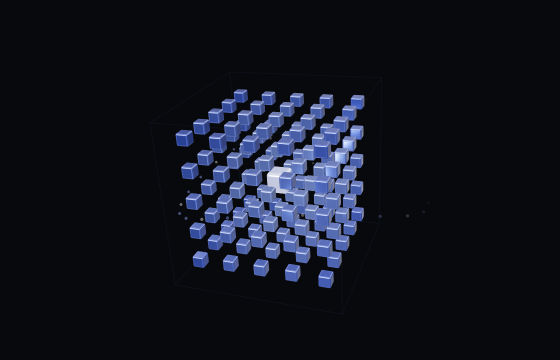

Banseok Lee
CEO
Inference Expert
UCLA

Intelligence that fits inside the robot.
The next challenge is deployment.
Both become harder at fleet scale.
Customer-required task success rate
A dropped connection
can’t mean a failed task.
3h work / 1h rest
Downtime eats ROI.
*NVIDIA module MSRP: $4,999 at 1,000+ units. Duty cycle depends on the robot and workload.
OUR GOAL
Jetson Orin NX 16 GB compute module*
Built to keep
working.
Intelligence, fully on board.
LOCAL INFERENCE
ON BOARDSmall compute. Continuous inference.
*Module MSRP: $999 at 1,000+ units. Continuous operation is the design goal.
MODEL COMPRESSION · LittleBit (NeurIPS ’25 · ICML ’26)
smaller language models
LittleBit + Speculative Decoding

LittleBit + World Action Model
UnifoLM-WLA-1.0
Jetson Orin NX · All inference on board
We have an
early signal.
4× playback speed
Successful real-world trials
Zero-shot in new environmentsRollouts at 4×. 60/90 = 66.7%. One-minute trials with retries. The task was seen in training; evaluation setups were new.
OUR GOAL
TEAM
CEO
Inference Expert
UCLA

CTO
Training Expert
IIT Bombay - JEE Rank 4
CRO
Humanoid Expert
KAIST
CPO
AI & Robot Systems Expert
Yonsei University
$8M
Milestones after funding
Run GR00T 2.0 on
Jetson Orin NX
Frontier open-source robot model
First shipment to a
high-volume manufacturer
Early discussions with LG
Our models & software.
Their data & hardware.
Add on-device
VLM reasoning